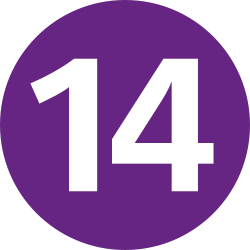

Laplace

Bicêtre
Barbara
Laplace
direction Paris •
--:--
5m
Cle API PRIM
Cree un compte sur
prim.iledefrance-mobilites.fr
et genere une cle API dans ton profil.
OK
Marche :
5 min
5m
Prochains passages
chargement...
Planning perturbations
Trafic